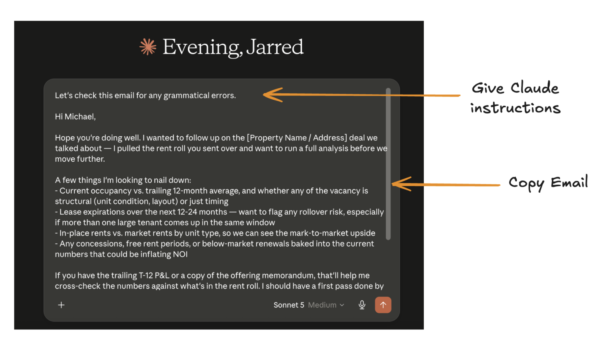
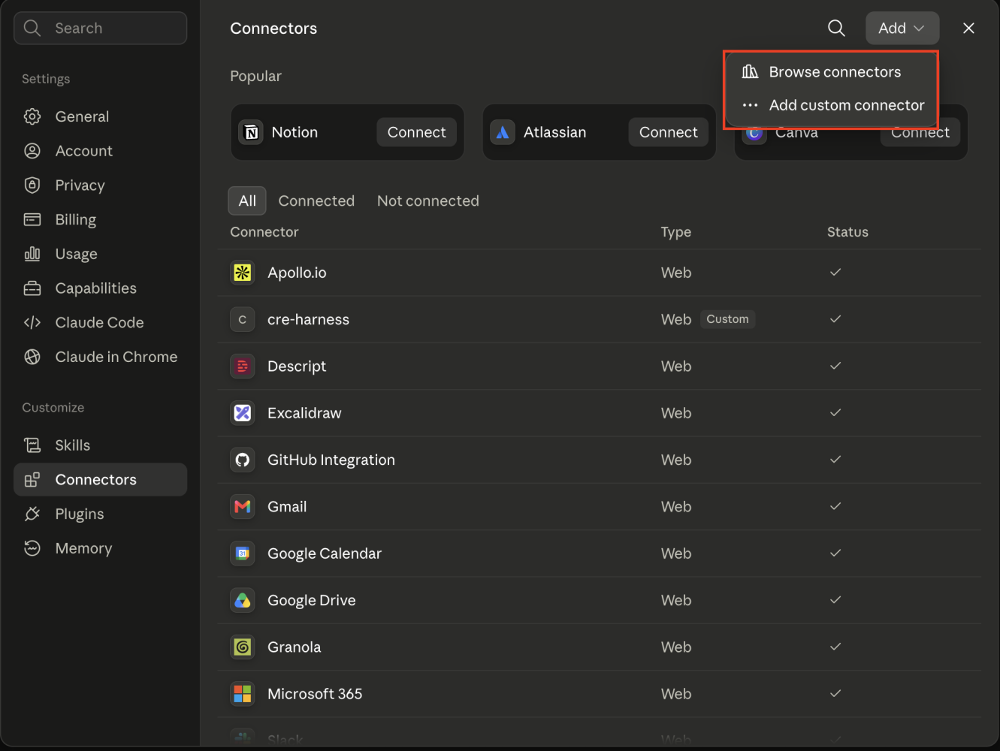
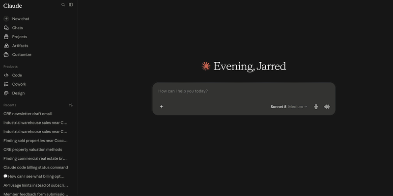

A connector bridges Claude directly to an external app, service, or data source. That turns it from a chatbot waiting for pasted context into a working member of the team.
For teams using Claude to review emails, the process often looks like this:

There is nothing wrong with this, but you do not have to work this way.
Connectors in Claude let you connect to other applications you use throughout the day in CRE. This gives Claude real work.
What is a connector?
A connector bridges Claude directly to external apps, services, and data sources.
Connectors turn Claude from a simple chatbot into a working member of your team.
But how do I set one up? What apps can I connect?
Keep reading.
How to set up a connector
In Claude, open Customize → Connectors.

Once you are there, you have two options:
- Browse connectors
- Add custom connector
Claude supports hundreds of packaged connectors, so there is a good chance the application you need already has one. If it does not, select Add custom connector.
Connecting to the CRM
Commercial real estate is a people-oriented business. You can meet people anywhere: golf courses, networking events, happy hours, tours, and referrals.
One of the easiest ways to get Claude doing real work in CRE is to connect it to your CRM.
We recently did this with people at our Claude in CRE workshop. The team was using folk as its CRM. Click the plus button next to the folk connector, sign in with the approved account, and Claude can begin working with the CRM.
Contact uploads
You spent the entire morning prospecting. You gathered a couple of business cards and phone numbers.
Since Claude is connected to the CRM, those people can become structured records directly through Claude instead of someone retyping every field.
That is the advantage of connectors.
Connecting to Yardi
Yardi is one of the most widely used property-management and accounting platforms in CRE.
Teams use it to track rent, lease terms, tenant billing, work orders, and financial reporting—essentially the operational backbone of a property.
Connecting Claude to Yardi removes the constant exporting of reports and digging through rows in Excel.
Custom connectors
Connectors extend Claude’s capabilities across the applications you use every day. But what if the connector does not exist?
That is where custom connectors come into play.

At altr, we have built custom connectors with CRE teams to bring real work directly into Claude.
Comp searching
Let’s say you have your eye on an 80,000-square-foot industrial warehouse in Tampa, Florida.
Most due diligence starts with some napkin math and comp comparison to understand whether it may be a good investment. Today, teams may use platforms such as CoStar, Crexi, or Reonomy to find comparable properties.
The drawback is that none of these services has a public API. We built a custom connector that pulls from county deed sites and matches ownership through Sunbiz to find property-owner information and comps for a specific property. That is the allowed path. Claude cannot connect to CoStar, and we will not build a login-sharing or scraping connector that pretends otherwise.
Custom connectors can be built for applications with an API, which includes most modern software, and they are a large part of what we build with teams at altr.
Next steps
Hopefully by now you have seen how Skills create reusable steps for Claude and connectors work directly inside the applications you already use.
Next, we are going to look at Claude Cowork and how you can hand off entire workflows for Claude to run without sitting there and prompting every step. For a non-CRE explainer of the same mode, see what Claude Cowork is.
Stay tuned for the next part of this series on Claude Cowork.
Want this built into your workflow?
You just watched us connect Claude to a CRM and to Yardi, for free, in minutes.
Now imagine every system your team runs on wired together—your CRM, Yardi, RentManager, AppFolio, and your deal tracker—all talking to Claude.
That is altr. We help CRE teams get real value from AI through hands-on enablement and custom deployment work built around the business.
If your team is using Claude but it is not making a real impact, book a call with us.
Do not make your team act as the connector. Give Claude a controlled route to the source system.
Originally published in the altr’d newsletter on LinkedIn.